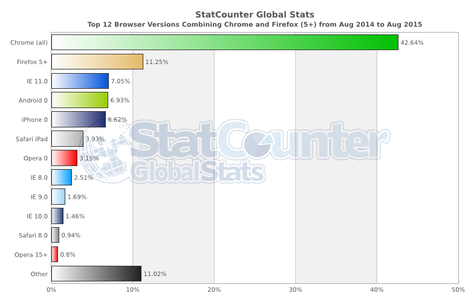

- 介绍
- 1. 什么是前端开发者?
- 2. 第一部分: 前端开发实践
-
3.
第二部分: 学习前端开发
- 3.1. 前端书籍推荐
-
3.2.
自学
- 3.2.1. 了解互联网/Web
- 3.2.2. 了解 Web 浏览器
- 3.2.3. 学习 DNS
- 3.2.4. 学习 HTTP/计算机网络
- 3.2.5. 了解 Web 主机
- 3.2.6. 学习前端开发基础
- 3.2.7. 学习 UI 及交互设计
- 3.2.8. 学习 HTML 和 CSS
- 3.2.9. 学习 SEO
- 3.2.10. 学习 JavaScript
- 3.2.11. 学习 Web 动画
- 3.2.12. 学习 DOM, BOM 和 jQuery
- 3.2.13. 了解 Web fonts
- 3.2.14. 学习无障碍
- 3.2.15. 学习 Web/浏览器 API
- 3.2.16. 学习 JSON
- 3.2.17. 学习 JS 模板
- 3.2.18. 了解静态站点生成器
- 3.2.19. 学习前端应用的架构
- 3.2.20. 学习 接口/API 设计
- 3.2.21. 了解浏览器开发工具
- 3.2.22. 学习命令行
- 3.2.23. 学习 Node.js
- 3.2.24. 了解模块加载器
- 3.2.25. 学习包管理器
- 3.2.26. 学习版本控制
- 3.2.27. 学习自动化构建工具
- 3.2.28. 学习网站性能优化
- 3.2.29. 学习 JS 测试
- 3.2.30. 学习 headless browsers
- 3.2.31. 学习离线开发
- 3.2.32. 学习 Web 安全
- 3.2.33. Learn multi-thing dev (e.g. RWD)
- 3.3. Directed learning
- 3.4. Front-end devs to learn from
- 3.5. 前端简报、资讯网站以及播客
-
4.
第三部分：前端开发工具合集
- 4.1. 基础开发工具
- 4.2. 文档/API 查看工具
- 4.3. SEO 工具
- 4.4. 原型以及线框图工具
- 4.5. 图表工具
- 4.6. HTTP/网络 工具
- 4.7. 代码编辑器
- 4.8. 浏览器工具
- 4.9. HTML 工具
- 4.10. CSS 工具
- 4.11. DOM 工具
- 4.12. 设计稿标注工具
- 4.13. JavaScript 工具
- 4.14. 命令行工具
- 4.15. 静态网页生成器
- 4.16. App (桌面、移动、平板端等) 工具
- 4.17. 脚手架工具
- 4.18. 模板工具
- 4.19. UI 部件和组件
- 4.20. 数据可视化工具
- 4.21. 图形 (比如：SVG, Canvas, WebGL)
- 4.22. 动画库
- 4.23. JSON 工具
- 4.24. 测试框架
- 4.25. 前端数据存储
- 4.26. 模块化/包 加载工具
- 4.27. 模块化/库 管理工具
- 4.28. Web/云/静态主机托管
- 4.29. 项目管理以及代码托管
- 4.30. 团队协作工具
- 4.31. CMS 托管/API 工具
- 4.32. BAAS
- 4.33. 离线工具
- 4.34. 安全工具
- 4.35. 任务管理工具
- 4.36. 部署工具
- 4.37. 网站以及应用监控工具
- 4.38. JS 错误监控工具
- 4.39. 性能工具
- 本书使用 GitBook 发布
了解浏览器
网页浏览器（英语：web browser，常被称为浏览器（browser））是一种用于检索并展示万维网信息资源的应用程序。这些信息资源可为网页、图像、视频或其他内容，它们由统一资源标志符标志。信息资源中的超链接可使用户方便地浏览相关信息。 网页浏览器虽然主要用于使用万维网，但也可用于获取专用网络中网页服务器之信息或文件系统内之文件。 主流网页浏览器有 Mozilla Firefox、Internet Explorer/Microsoft Edge、Google Chrome、Opera 及 Safari。--维基百科
常用的浏览器 :
- Chrome (内核： Blink + V8)
- Firefox (内核：Gecko + SpiderMonkey)
- Internet Explorer (内核： Trident + Chakra)
- Safari (内核： Webkit + SquirrelFish)

图片来源：http://gs.statcounter.com/#all-browser_version_partially_combined-ww-monthly-201408-201508-bar
浏览器以及 Web 技术的发展(例如 API's)
- www.evolutionoftheweb.com [阅读]
- 浏览器发展史 [阅读]
常见的 Headless 浏览器：
- PhantomJS (内核： Webkit + SquirrelFish)
- slimerjs (内核：Gecko + SpiderMonkey)
- TrifleJS (内核： Trident + Chakra)
浏览器是如何工作的
- 关于浏览器我学到的 20 件事 [阅读]
- Fast CSS：浏览器时如何渲染网页的 [阅读]
- 浏览器是如何工作的：现代浏览器内部的故事 [阅读]
- 浏览器是如何渲染网页的 [观看]

图片来源：http://www.html5rocks.com/en/tutorials/internals/howbrowserswork/
浏览器优化：
浏览器安全
- 浏览器安全手册 [阅读]
- 前端安全 [观看]
- HTML5 Security Cheatsheet [阅读]
- Web 开发者的安全之道：使用 HTML、JavaScript 以及 CSS [阅读][$]
- 杂乱无章的 Web：现代 Web 程序的安全指南 [阅读][$]
浏览器对比
- Web 浏览器的对比 [阅读]
Developing for browsers
浏览器适配
在过去，前端工程师通常要花费大量的时间让代码得以在不同的浏览器间工作。时至今日，这依然是个大问题。你必须为一些老旧的浏览器（比如 IE 8）单独写代码。这无疑耗费了前端工程师大量的时间和精力。事实上，现代的 In the past, a front-end developer spent a lot of time making code work in several different browsers. This was once a bigger issue than it is today, unless you have to write code for older browsers (i.e. <IE8). This still remains an issue today, just not one that demands so much of the front-end developers time and brain cycles. The fact of the matter is modern abstractions (e.g. jQuery, pre-processors, transpilers) have done away with a lot of browser inconsistency issues.
Evergreen browsers
常青浏览器
特定浏览器的当前和此前的若干版本称为常青浏览器。 The latest versions of browsers are considered evergreen browsers. That is, in theory they are suppose to automatically update themselves silently without prompting the user. This move towards self updating browsers has been in reaction to the slow process of eliminating older browsers. Older browsers are complicated to develop for given their deviations from the commonalities between modern browsers (i.e. new specifications and this rate of change).
Picking a browser
As of today, most front-end developers use Chrome and the tools available to a developer, "Chrome Dev Tools". However, all of the browsers offer a flavor of developer tools. Picking one to use for development is a subjective matter. The more important issue is knowing which browsers you have to support and testing in each as you develop. Select whichever browser makes sense to your brain and gets the job done. I suggest using Chrome simply because the developer tools are consistently improving and at this time contain the most robust features.
Browser hacks
- browserhacks.com [read]